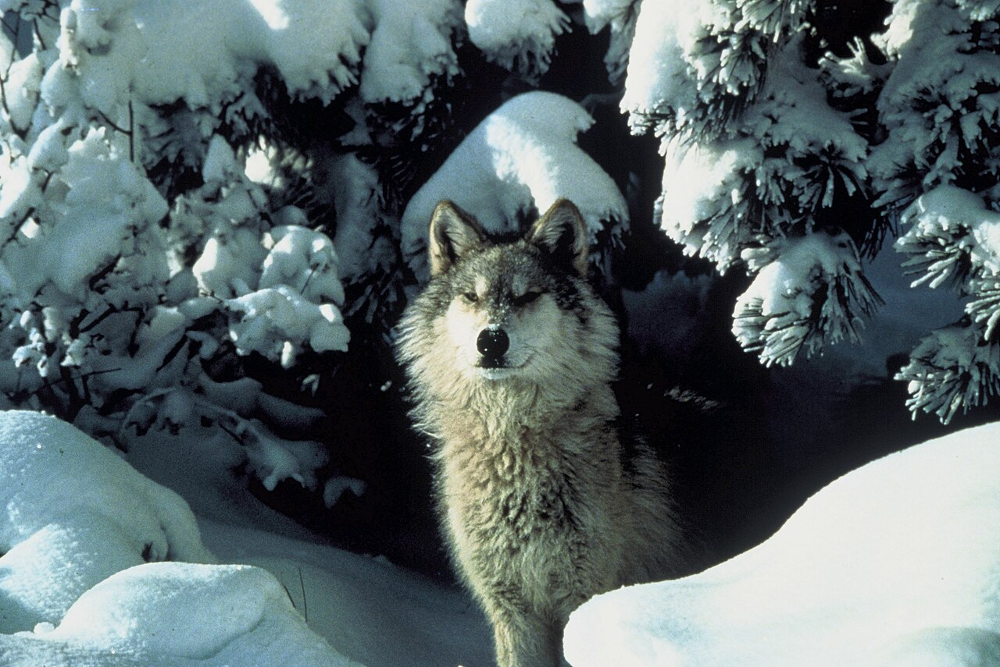
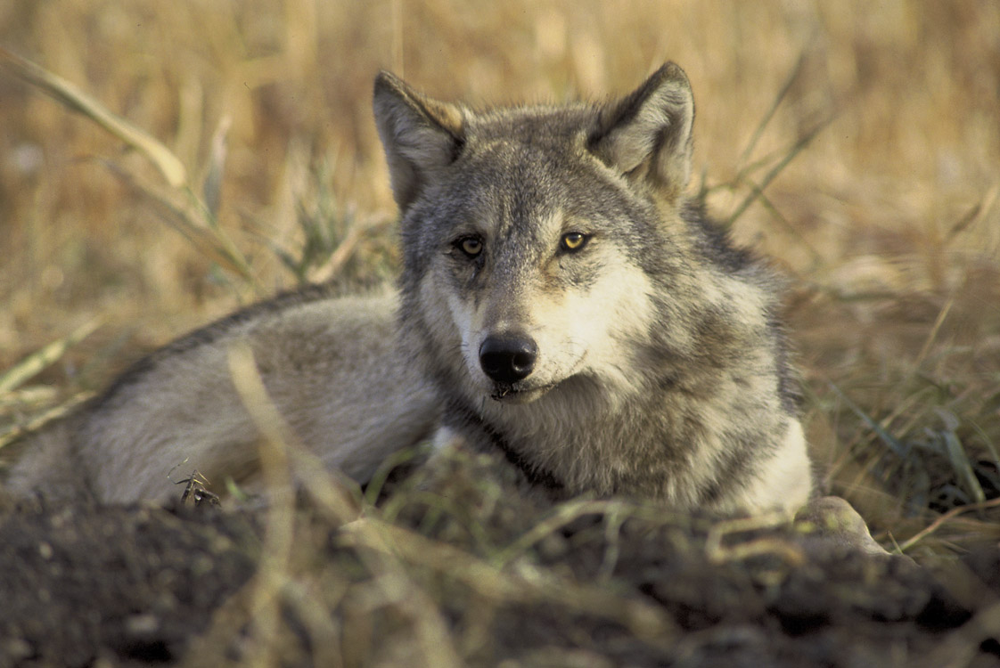
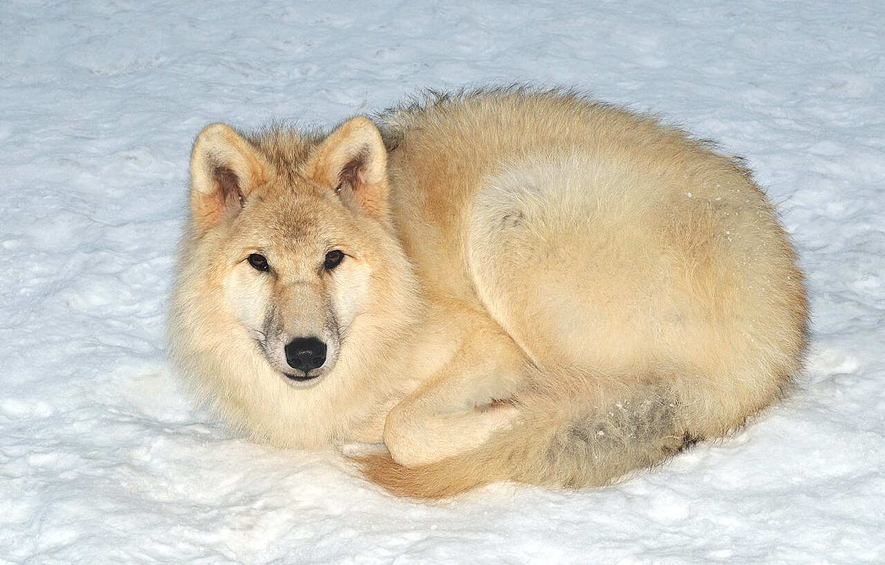
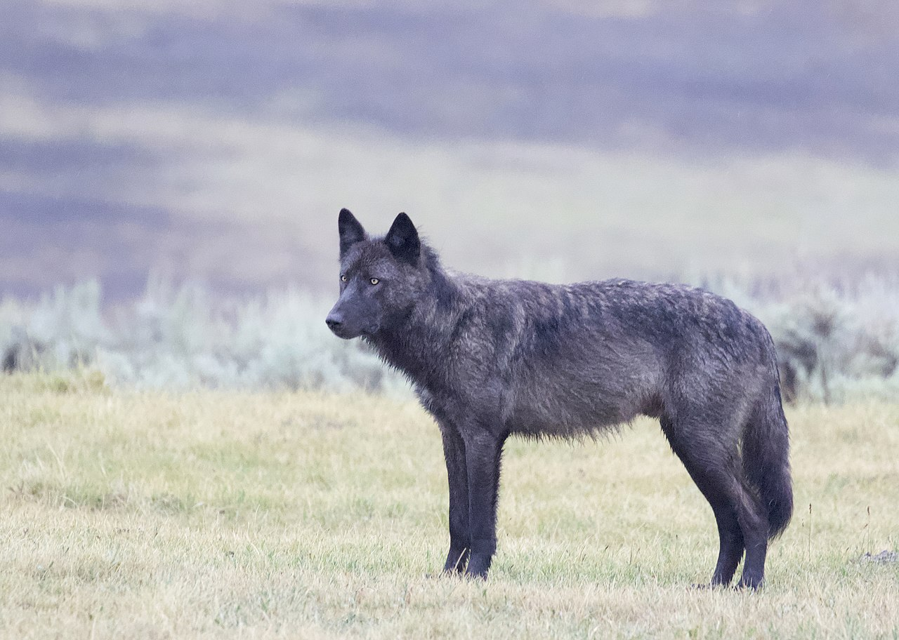

02 · Image Gallery
In their element.
Six wolves, six moments. Pulled from the public domain — these are real photos from real wildlife archives, free for anyone to use.
All photos public domain via Wikimedia Commons (U.S. Fish & Wildlife Service / National Park Service / contributor-released).

In the snow, under the firs
Canis lupus · USFWS · Public domain

Eye contact, no apologies
Canis lupus · USFWS · Public domain

Mexican wolf, full stride
Canis lupus baileyi · USFWS · Public domain

Resting between hunts
Endangered gray wolf · USFWS · Public domain

Arctic wolf, curled in
Canis lupus arctos · Wikimedia Commons · Public domain

Black coat, Yellowstone meadow
Canis lupus · Wikimedia Commons · Public domain
Submit your wolf photos
Got a wolf shot you're proud of? Send it in. We feature reader submissions in this gallery with full credit. Real photos only — please, no AI generations.
Send us your shot
Our submission form is hosted on Google Forms. You'll need to be signed into a Google account to upload your photo.
Open submission form ↗Opens in a new tab.